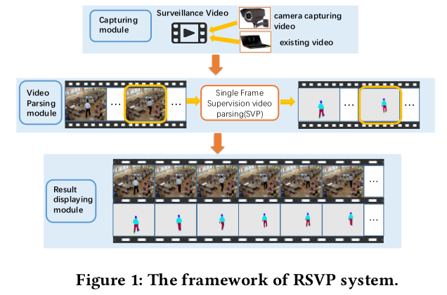

A Real-Time Surveillance Video Parsing with Single Frame Supervision
Authors
- Han Yu, Guanghui Ren, Ruihe Qian, Yao Sun, Changhu Wang, Si Liu
Introduction
In this demo, we present a real-time surveillance video parsing (RSVP) system to parse surveillance videos. Surveillance video pars- ing, which aims to segment the video frames into several labels, e.g., face, pants, left-legs, has wide applications[7], especially in security filed. However, it is very tedious and time-consuming to annotate all the frames in a video. We design RSVP system to parse the surveillance videos in real-time. The system, namely Single frame Video Parsing (SVP), requires only one labeled frame in training stage. SVP jointly considers the segmentation of preceding frames when parsing one particular frame within the video. The RSVP system is proved to be effective and efficient in real applications.
Deep Architecture

Demo
References
- [1] Marius Cordts, Mohamed Omran, Sebastian Ramos, Timo Rehfeld, Markus En- zweiler, Rodrigo Benenson, Uwe Franke, Stefan Roth, and Bernt Schiele. 2016. The cityscapes dataset for semantic urban scene understanding. CVPR (2016).
- [2] Philipp Fischer, Alexey Dosovitskiy, Eddy Ilg, Philip Häusser, Caner Hazirbas, Vladimir Golkov, Patrick van der Smagt, Daniel Cremers, and Thomas Brox. 2015. FlowNet: Learning Optical Flow with Convolutional Networks. CoRR (2015).
- [3] Xiaodan Liang, Chunyan Xu, Xiaohui Shen, Jianchao Yang, Si Liu, Jinhui Tang, Liang Lin, and Shuicheng Yan. 2015. Human Parsing With Contextualized Con- volutional Neural Network. ICCV (2015).
- [4] Si Liu, Changhu Wang, Ruihe Qian, Han Yu, Renda Bao, and Yao Sun. 2017. Surveillance Video Parsing with Single Frame Supervision. CVPR (2017).
- [5] Jérôme Revaud, Philippe Weinzaepfel, Zaïd Harchaoui, and Cordelia Schmid. 2015. EpicFlow: Edge-preserving interpolation of correspondences for optical flow. CVPR (2015).
- [6] HW Zhang, Z-J Zha, Y Yang, SC Yan, Y Gao, and T-S Chua. 2013. Attribute- augmented semantic hierarchy: towards bridging semantic gap and intention gap in image retrieval. In ACM MM.
- [7] Rui Zhao, Wanli Ouyang, and Xiaogang Wang. 2014. Learning mid-level filters for person re-identification. In CVPR.